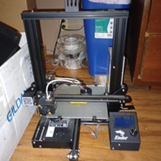
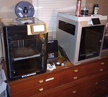
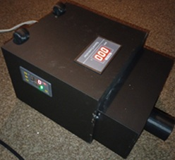
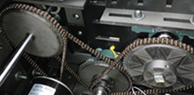

Third-Party Material & Stress Validation
Empirical technical data is vital when substituting traditional milled alloys with custom engineering polymers. The following curated physical testing documentation provides transparent, destructive benchmarks comparing high-performance composite matrices against standard industrial metals under load configurations:
-
🖲️ Nylon-CF vs. 6061-T6 Aluminum: Structural Deflection & Yield Testing
Third-party tensile and structural degradation metrics charting the point at which carbon fiber reinforced nylon shears compared to pure milled alloy equivalents.
-
🖲️ Industrial Filament Lifecycle Analysis & Continuous Abrasion Diagnostics
Extended mechanical wear-cycle test documenting structural material volume loss under constant abrasive friction parameters mimicking a bulk handling line.
-
🖲️ Carbon Fiber Composite Infill Orientation & Impact Strength Failure Limits
Destructive impact testing evaluating how internal multi-directional slicing geometry passes torque load variations.
Comparative Material Specifications
While metal systems claim unmatched density caps, they frequently impose excessive over-engineering and extreme capital tool machining backlogs. Our Nylon-CF system captures required operational mechanical tolerances while eliminating supply dependencies.
| Material Layer | Density (g/cm³) | Tensile Strength (MPa) | Modulus of Elasticity (GPa) | Relative Tooling Capital Cost |
|---|---|---|---|---|
| Engineering Nylon-CF (PPL Matrix) | ~1.24 - 1.40 | ~110 - 145 | ~8.5 - 11.0 | Minimal (Localized Desktop Printing) |
| 6061-T6 Aluminum | 2.70 | 310 | 68.9 | High (External CNC Tooling Loops) |
| 304 Stainless Steel | 8.00 | 505 | 193.0 | Extreme (Custom Machining / Casting) |
The Infrastructure Journey: From Zero to Prototype
A transparent look at the timeline, development milestones, and physical validation blocks leading up to the Polymer Prodigy Labs launch:



